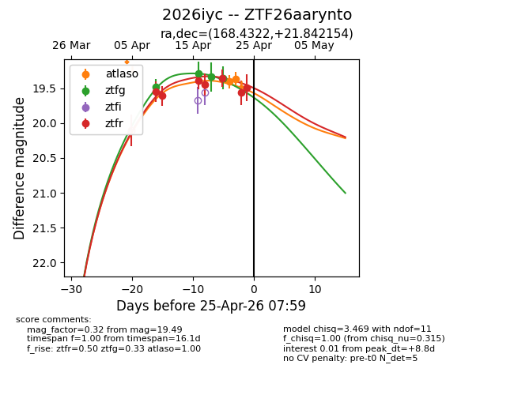
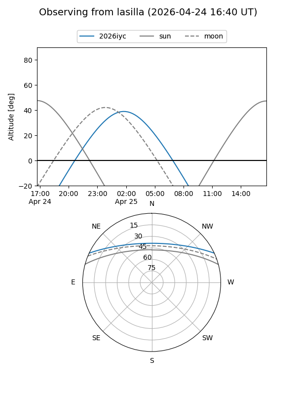
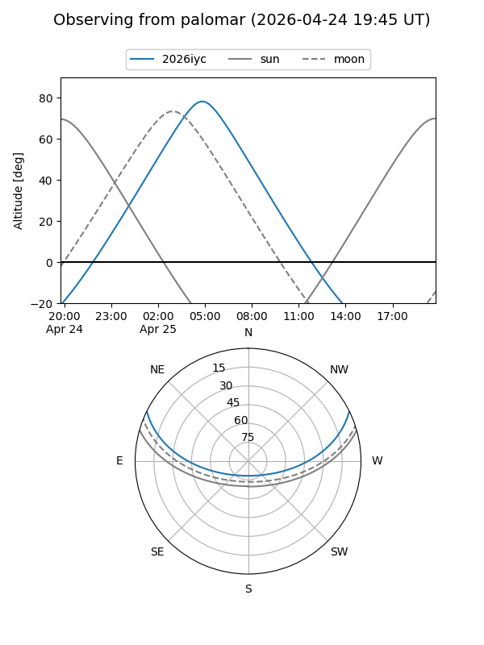
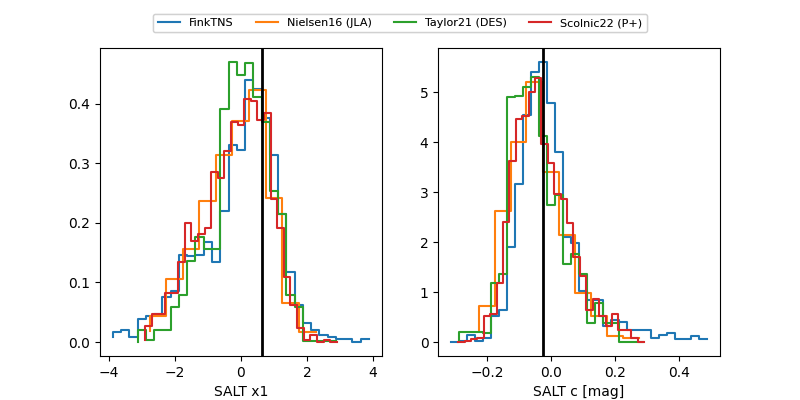

2026iyc
Target 2026iyc at 2026-04-25 08:00
Aliases and brokers:
FINK: link
Lasair: link
ALeRCE: link
TNS: link
YSE: link
alt names
ZTF26aarynto (ztf,fink_ztf)
2026iyc (tns,yse)
Coordinates:
equatorial (ra, dec) = 168.4322,+21.84215
equatorial (HMS+DMS) = 11:13:43.74,+21:50:31.75
galactic (l, b) = (220.9753,+67.19078)
Flags:
Photometry:
last atlaso=19.36, ztfg=19.35, ztfr=19.49
2 atlaso, 4 ztfg, 7 ztfr detections
Lightcurve

Visibility


Additional plots
